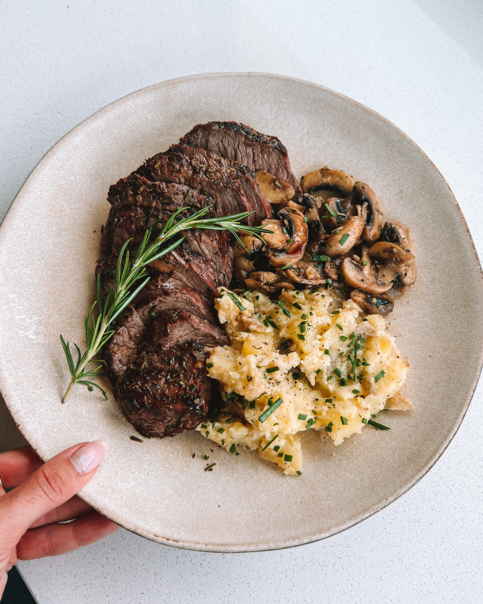

Steak with Mash Potato

Description
The following is a recipie of a steak dinner for one with mash potato that should take you 30 minutes, providing you with a tasty and nutritious recipie.
Ingredients
- Rib-eye Steak
- 3 garlic cloves
- Thyme
- Rosemary
- Kerrygold butter
- 2 medium potatoes
- Milk
Steps
Mash Potatoes
- Boil water
- Wash potatoes
- Peel potatoes with a peeler
- Place potatoes in pot and cover with water and place on max heat
- Wait for around 20 minutes
- Check if cooked by poking with fork and seeing if it passes through easily
- Turn of heat and drain water
- Mash fully with a masher
- Add large chunk of butter and half cup of milk
- Place on medium heat and whisk thoroughly with hand whisk until smooth and creamy
Steak
- Put steak on chopping board and rub salt and pepper on both sides
- Put large amount of olive oil and knob of buter in pan and put on high heat
- Add steak
- Add whole garlic cloves, thyme and rosemary
- Baste steak constantly with spoon as it cooks
- Check underside of steak to see if it has developed a crust after a few minutes, if it has: flip
- Again, baste steak as it cooks
- Remove once other side has also developed crust
Serving
- Plate mash first
- Place steak on plate and add a green garnish
- Enjoy!